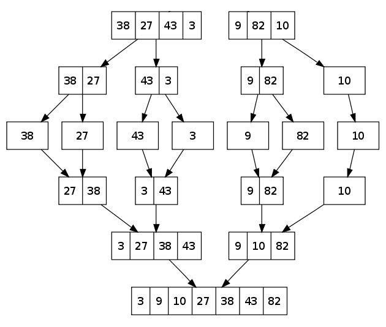
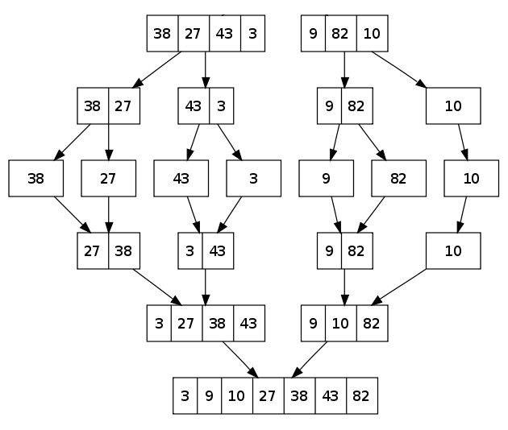

Merge sort - Ordenamiento por mezcla
- Ordena una lista
- Si la lista solo tiene un elemento, esta ordenada
- Divide la lista en dos partes, y luego ordena cada lista
(recursividad - Vuelve a paso 1 con cada parte/lista)
- Con los dos listas ordenadas, combina los dos en una lista ordenada
- Retorna la lista ordenada
 Image Author: Swfung8 from https://upload.wikimedia.org/wikipedia/commons/c/cc/Merge-sort-example-300px.gif

Image Author: Swfung8 from https://upload.wikimedia.org/wikipedia/commons/c/cc/Merge-sort-example-300px.gif
